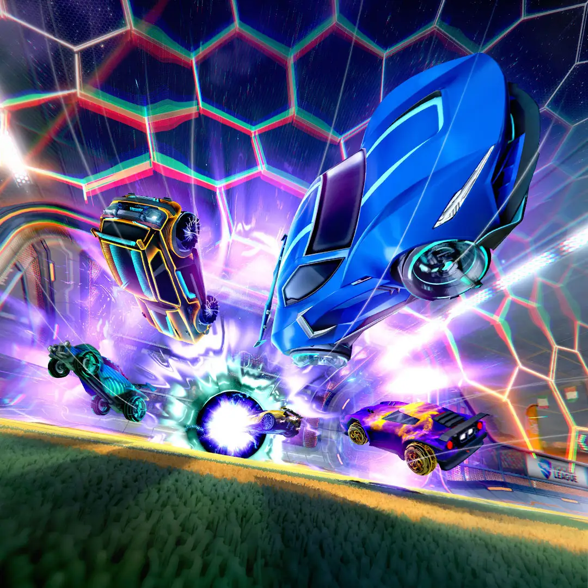
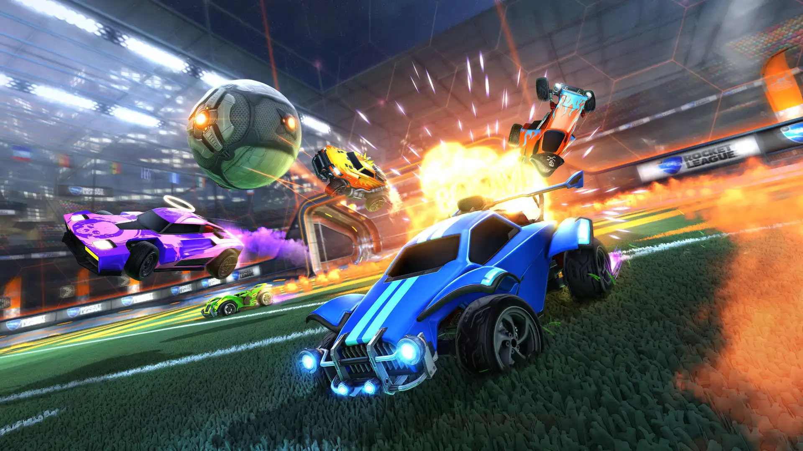

Rocket League
¿Que es Rocket League?
Rocket League es un apasionante juego desarrollado por Psyonix que combina coches teledirigidos, conducción y fútbol para crear tensos partidos en los que puede pasar cualquier cosa.
Los partidos duran cinco minutos, tiempo que tienen los equipos para tratar de anotar más goles que el rival. En la competición de Rocket League no existen los empates, ya que en caso de que lleguen con el marcador igualado al final de esos cinco minutos —aunque no se pita el final hasta que el balón toca el suelo— los equipos comienzan una prórroga que solo concluirá en el momento en que uno de los dos equipos anote.
¿Como se juega?
Es un poco como jugar al fútbol mientras controlas un coche teledirigido que puede saltar y deslizarse por el aire. Es muy divertido, ahora es gratuito y, lo que es más importante, reúne a un montón de jugadores con talento para crear una escena competitiva e innovadora accesible para todos. Pero cuidado, novato: a menudo se cometen algunos errores que deben ser evitados. No te preocupes: estamos aquí para ayudarte.
Rocket League es, como el fútbol clásico, un juego de equipo. No todos los jugadores tendrán la oportunidad de marcar un gol, pero todos son muy importantes en tu equipo. Así que no olvides que subir a la portería para ser irremediablemente bloqueado por el equipo contrario no tiene sentido si podrías haber hecho un pase a tu compañero que estaba desmarcado en el otro lado del campo. Sé táctico: el ojeador al que quieres impresionar no está en las gradas.

¿Quien creo Rocket League?
Psyonix LLC es un desarrollador de videojuegos estadounidense con sede en San Diego . Fundada en 2000 por Dave Hagewood, la compañía es mejor conocida por su juego Rocket League de 2015 . En mayo de 2019, Epic Games adquirió Psyonix .
Calificacion
Rocket League ya cuenta con más de 40 millones de jugadores en todo el mundo
Año de lanzamiento
Rocket League ya cuenta con más de 40 millones de jugadores en todo el mundo
Reseña
Increíble, todo su contenido increible y ya espero que salga Rocket League 2 y el nuevo motor gráfico. La jugabilidad, los torneos, las rankeds funcionan (casi todas) de maravilla y casi no hay tóxicos (por lo menos en mis partidas no). Hay cosas muy chulas de inventario y que se pueda quemar inventario para conseguir algo de mayor categoría le da muchos puntos. Hace poco me toco un Dominus tw y lo vendí por 10k creditos, consegui bastante inventario. Es un juego que se tarda lo suyo aprender y lo recomiendo para la gente que quiera buscar nuevos juegos gratis y divertidos. Me parece de lo mejor de Epic Games.
